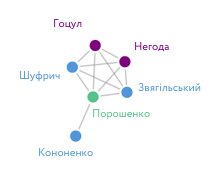
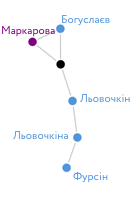
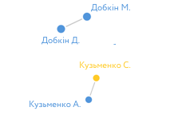
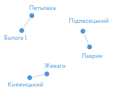

В Україні не розвинений фондовий ринок і дуже незначна частка людей використовують акції, паї, долі та інші корпоративні права для інвестицій. У владній верхівці інша ситуація: наприклад, серед голів ОДА та народних депутатів кожен другий володіє акціями чи правами власності в бізнесі, серед членів Кабміну кожен п’ятий, а у президента України одна з найрізноманітніших «колекцій»: він має цінні папери, корпоративні права чи є бенефіціаром у понад 100 компаніях. Власність високопосадовців та чиновників не привід для заздрощів і «класової ворожнечі», але це предмет ретельного аналізу, пошуку закономірностей та аномалій. Так, якщо двоє або більше політиків, депутатів, урядовців, суддів є співвласниками компанії, то існує висока імовірність, що їх пов’язують спільні інтереси чи наявний потенційний конфлікт інтересів, якщо їхня службова діяльність має відношення до сфери діяльності компанії. Кінцева мета такого аналізу — сприяти прозорості, підзвітності, виявленню й купуванню конфліктів інтересів та, як результат, зростанню ефективності української влади.
Щоб знайти зв’язки між чиновниками (співвласниками в компаніях), ми перевірили всі їхні електронні декларації, застосувавши мережевий аналіз. Загалом ми дослідили більше 30 000 осіб, які задекларували цінні папери, корпоративні права або компанії, в яких вони чи члени їхніх родин є бенефіціарами.
З 2015 року українські чиновники подають онлайн-декларації про доходи та майно. Ці дані перебувають у відкритому доступі, а нинішня форма декларації передбачає надання багатьох даних про юридичних осіб, пов’язаних з декларантом: компанії — джерела доходу, місця розміщення грошових активів та фінансових зобов’язань, організації, членом яких є декларант, а також компанії, в яких декларант є власником у тій чи іншій формі: має цінні папери, корпоративні права або є бенефіціаром.
Ми проаналізували дані про власність у компаніях — цінні папери, корпоративні права або належність до бенефіціарів. Ми обмежилися лише даними про власність, не беручи до уваги, наприклад, членство в організаціях та об’єднаннях, оскільки власність створює найбільш сильний зв’язок, тоді як у даних про джерела доходів або про членство в організаціях багато «шуму» і вони потребують додаткової фільтрації.
Джерело даних — сайт проекту «Декларації» ГО «Канцелярська сотня», що надає АРІ для доступу до даних. Для аналізу ми обрали річні декларації за 2017 рік. Власність у компаніях задекларували близько 30 000 осіб (~3% від загальної кількості). Для аналізу було використано мову програмування Python, зокрема пакет networkx. Використаний код доступний на Github.
Спершу подивимось, які компанії найбільш «популярні» серед чиновників, тобто мають найбільшу кількість власників. Очікувано, це великі акціонерні товариства, акції яких обертаються (чи торгувалися раніше) на фондовому ринку. Серед топ-10 найпопулярніших компаній «Укррічфлот» (задекларували 375 осіб), «Укртелеком» (327), «Запоріжсталь» (299) та інші. Загалом частки власності в цих компаніях мають більше 2000 декларантів.
Наведіть на вузол для деталізації
Схема 1. Топ-10 компаній.
На схемі 1, яка відображає топ-10 найбільш популярних компаній, видно, що ці акціонерні товариства «пов’язані» між собою: є декларанти, які володіють частками в декількох компаніях. Наприклад, суддя, податківець та співробітник НБУ задекларували акції «Укртелекому» і «Азовсталі». Але такі зв’язки, скоріше за все, ні про що не свідчать: акціонери публічних компаній з великою імовірністю не знайомі один з одним.
Окрім популярних компаній можна також відібрати «популярних» декларантів — тих, що мають власність у багатьох компаніях. Четверо осіб задекларували власність у більш ніж 100 компаніях. Це президент Петро Порошенко, народний депутат Вадим Новинський, власник мережі «Фуршет» Ігор Баленко, і найцікавіший випадок — депутат сільради в Харківській області Олександр Заболотний (про його більш ніж 150 компаній ЗМІ вже писали, наприклад, тут).
Тепер подивимось, як декларанти «пов’язані» бізнесом (компаніями) між собою.
Найбільш сильними будемо вважати зв’язки, коли декларанти мають власність в одній і тій самій компанії.
Визначимо людей, що мають власність, наприклад, у компаніях, в яких акціонером/бенефіціаром чи власником корпоративних прав є Петро Порошенко (ми обрали президента як публічну і найбільш впливову фігуру, яка до того ж має дуже широкі бізнес-інтереси).
Наведіть на вузол для деталізації
Схема 2. Компанії президента.
Порошенко має власність у декількох великих компаніях, пов’язаних з багатьма декларантами: це Промінвестбанк (доля Порошенка 0,000015%), Вінницька кондитерська фабрика (основний акціонер «Рошен» — 99%, співробітникам фабрики належить близько 1%) та Крижопільський цукровий завод. На графіку це три вузли з найбільшою кількістю «сусідів».
Але нас цікавлять інші зв’язки. Наприклад, є двоє декларантів, що мають спільні з Порошенком частки в декількох компаніях. Такий зв’язок набагато міцніший і потребує пильної уваги. Дійсно, ці двоє осіб — бізнес-партнери Порошенка, що зараз обіймають державні посади: народний депутат Ігор Кононенко та перший секретар РНБО Олег Гладковський. Усі троє мають власність у Міжнародному інвестиційному банку, а також у кіпрській компанії Ri-System Limited, Кононенко має спільну з президентом власність ще у шести компаніях.
Аналіз зв’язків окремих чиновників або пошук зв’язків між окремими людьми — це, так би мовити, точкова зброя. Але можна також проаналізувати зв’язки в межах певної групи декларантів. Для прикладу розглянемо найвищі щаблі органів виконавчої та законодавчої влади: президента, парламент, Кабінет Міністрів, голів ОДА, а також керівництво деяких державних органів, таких як Антикорупційне бюро, Генпрокуратура, Національний банк, Антимонопольний комітет, комісії з регулювання ринків: НКРЕКП, НКРЗІ, НКЦПФР, НРПТР, Національна рада з питань телебачення і радіомовлення. У групи потрапили керівники та їхні заступники, члени комісій і правлінь, уповноважені. Загалом було проаналізовано більше 600 осіб, з них 423 чинних депутати парламенту.
Понад 40% цих чиновників задекларували цінні папери, корпоративні права або компанії, де вони чи члени їхніх родин є бенефіціарами. Найвищий показник серед голів обладміністрацій (55%) та народних депутатів (51%). Показник Кабміну (сюди входять як міністри, так і їхні заступники і державні секретарі міністерств) — 21%, у решти чиновників — 24%.
Що ж до народних депутатів, то найбільше бенефіціарів, власників цінних паперів чи інших корпоративних прав серед представників партій «Воля народу» (84%), «Відродження» (67%) та «Опозиційний блок» (63%), найменше — у «Народного фронту» (32%) та «РПЛ» (38%).
Якщо розглянути тільки найтісніші зв’язки (участь в одній і тій самій компанії), то таких прикладів серед топ-чиновників буде небагато: 37 осіб із 261 (~14%). На графіку нижче такі зв’язки позначені лініями. Більшість топ-чиновників не пов’язані з іншими особами прямими бізнес-стосунками і позначені на графіку окремими точками.
Наведіть на вузол для деталізації
Схема 3. Зв'язки у найвищих владних структурах.
Увагу привертає тісно переплетена група із семи декларантів (два міністри — Кубів і Гриневич, чотири депутати та голова комісії з цінних паперів). Однак ці семеро задекларували цінні папери — облігації внутрішнього держзайму, випущені Міністерством фінансів. Такі зв’язки не можна вважати доказом конфлікту інтересів чи спільних бізнес-інтересів.
Ще одна досить велика група включає президента. Як ми вже зазначали, він пов’язаний з Ігорем Кононенком (задекларовано 8 спільних компаній). Крім того, через володіння акціями Промінвестбанку він пов’язаний з депутатами Нестором Шуфричем та Юхимом Звягільським, а також першим заступником міністра молоді та спорту Ігорем Гоцулом та першим заступником міністра регіонального розвитку, будівництва та ЖКГ В’ячеславом Негодою. Утім, Промінвестбанк — це нетипове акціонерне товариство: 99,77% у володінні російського «Внешэкономбанк», який на 100% належить Російській Федерації, а 0,23% розпорошені серед тисяч акціонерів. Володіння його акціями задекларували більше 80 чиновників, тож важко роботи висновки з таких зв’язків.
Є ще декілька акціонерних товариств, де перетинаються відомі політики й чиновники. Наприклад, депутат «Опоблоку» Сергій Льовочкін має «зв’язок» із членом НКЦПФР Олександром Панченком — вони обидва володіють акціями «Укртелекому». Однак «Укртелеком» — одне з найбільших акціонерних товариств у нашому дослідженні (327 декларантів мають його акції), тож такий зв’язок може ні про що не свідчити. Сам Панченко також має акції інших компаній, зокрема «Мотор Січ», володіння акціями якої задекларували понад 80 чиновників, у тому числі народний депутат «Волі народу» В’ячеслав Богуслаєв та в.о. міністра фінансів Оксана Маркарова.
Однак є й цікаві групи, пов’язані зв’язками в менш «розпорошених» компаніях. Наприклад, група з трьох людей — депутатів «Опоблоку» Сергія Льовочкіна і Юлії Льовочкіної та депутата «Волі народу» Івана Фурсіна. Юлія Льовочкіна та Іван Фурсін — акціонери АБ «Кліринговий дім» та бенефіціари кіпрської компанії Monier Ventures Limited і української промислової групи "Монієр". Разом із Сергієм Льовочкіним Юлія Льовочкіна є бенефіціаром зареєстрованої на Сейшелах компанії Novembe Ventures Ltd.
 Інші зв’язки утворені парами чиновників. Тут є родичі: наприклад, брати Михайло та Дмитро Добкіни, родини яких володіють акціями Володимир-Волинської птахофабрики, або депутат «БПП» Анатолій Кузьменко та його син, голова Кіровоградської ОДА Сергій Кузьменко — в їхньому спільному володінні 18 компаній, у тому числі Олександрійський цукровий завод, Світловодський річковий термінал та ФК «Олександрія».
Деякі депутати пов’язані бізнес-зв’язками через членів родин. Наприклад, дружини депутатів «Волі народу» Василя Петьовки та позафракційного Івана Балоги є акціонерами Мукачівської автобази, а також бенефіціарами компаній «Закарпатагрохолдинг» та «Закарпатсільгоспсервіс». Дружини депутатів «Самопомочі» Льва Підлісецького та Олега Лаврика є акціонерами компанії «Південьзахіделектромережбуд». Дружина депутата «НФ» Миколи Княжицького володіє 22,5% капіталу компанії «Астра фінанс», кінцевим бенефіціаром якої є син позафракційного депутата Костянтина Жеваго.
Загалом із 261 топ-чиновника, які задекларували певні корпоративні права, у 96 (37%) такі права записані виключно на членів родини, тоді як у самого декларанта корпоративних прав немає.
Звичайно, наявність спільних бізнес-інтересів не означає, що чиновники обов’язково увійдуть у змову, особливо якщо йдеться про власність у великих акціонерних товариствах. Однак такі зв’язки можуть бути фактором ризику, і корисно мати дані, які дозволяють швидко перевірити їх наявність та запобігти зловживанням.
Ми віримо, що слова мають силу, а ідеї – визначний вплив. VoxUkraine об’єднує найкращих економістів та допомагає їм доносити ідеї до десятків тисяч співвітчизників. Контент VoxUkraine безкоштовний (і завжди буде безкоштовним), ми не продаємо рекламу та не займаємось лобізмом. Щоб проводити більше досліджень, створювати нові впливові проекти та публікувати багато якісних статей, нам потрібні розумні люди і гроші. Люди є! Підтримай VoxUkraine. Разом ми зробимо більше!